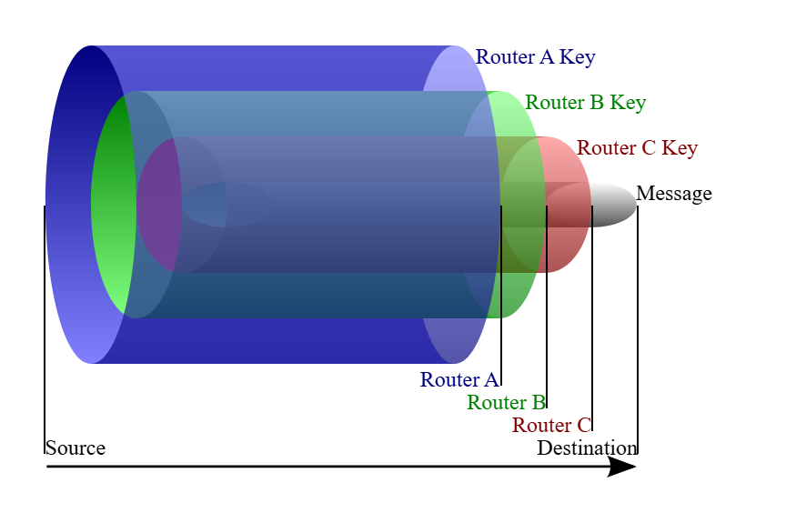

Vue d'ensemble
Messagerie anonyme par routage en oignon
Ce projet reproduit les principes du réseau Tor : les messages sont chiffrés en plusieurs couches successives, traversent des routeurs qui décryptent chacun une couche, masquant ainsi l'origine et la destination des échanges. L'objectif est de permettre des communications anonymes et sécurisées dans une architecture distribuée.
Au-delà d'une simple messagerie, le système intègre une gestion concurrente des connexions, une base de données pour la persistance, et des interfaces graphiques complètes pour le monitoring côté Master et la communication côté Client.
Architecture
Le principe de l'oignon
Client A
Expéditeur
Routeur 1
Couche 3 → 2
Routeur 2
Couche 2 → 1
Client B
Destinataire
Master — gestion des clés & topologie
Transport TCP — sockets
RSA asymétrique — 3 couches
Sockets TCP
Communication réseau en temps réel entre tous les composants.
RSA simplifié
Chiffrement asymétrique multi-couches pour l'anonymat.
Multi-threading
Gestion simultanée de plusieurs connexions clientes.
MariaDB
Persistance des messages et des sessions utilisateurs.
PyQt6
Interfaces graphiques modernes pour Master et Client.
Signaux Qt
Intégration interface ↔ backend réseau en temps réel.
Collaboration
Répartition du travail
Nolan HOARAU
// Logique réseau & sécurité
Logique réseau et sockets
Algorithme de chiffrement RSA
Protocole de routage multi-sauts
Soumaya RABAH — moi
// Interfaces & données
Interfaces PyQt6 Master & Client
Base de données MariaDB
Intégration interface ↔ backend
Organisation Git, structure & planning
Documentation technique
Déroulement
Chronologie du projet
01
Analyse du cahier des charges et conception de l'architecture
02
Développement des modules Master / Routeur / Client
03
Création et intégration de la base de données MariaDB
04
Développement des interfaces graphiques PyQt6
05
Intégration des composants — synchronisation interface / threads réseau
06
Tests multi-machines et sur VM
07
Documentation technique et utilisateur, finalisation
Retour d'expérience
Ce que j'en retiens
Ce projet a été particulièrement enrichissant car il combinait développement, réseau et cybersécurité. J'ai découvert PyQt6 et appris à concevoir des interfaces complètes et interactives. Les difficultés liées à l'intégration entre l'interface et les threads réseau m'ont permis de développer une vraie méthodologie de résolution de problèmes. Ce projet a renforcé mon intérêt pour les systèmes complexes et la cybersécurité.
Compétences
Ce que j'ai développé
Développement
Réseaux
Cybersécurité
Référentiel
Apprentissages critiques
AC21.06Travailler en équipe pour développer ses compétences professionnelles
AC22.05Capacité à questionner un cahier des charges RT
AC23.02Développer une application à partir d'un cahier des charges donné, Web ou mobile
AC23.03Utiliser un protocole réseau pour programmer une application client/serveur
AC23.04Installer et administrer un système de gestion de données
AC23.05Accéder à un ensemble de données depuis une application ou un site web
Formation
Ressources mobilisées
R3.08Consolidation de la programmation
R3.09Programmation événementielle
R3.10Gestion d'un système de bases de données
R3.11Anglais professionnel 1
R3.12Expression-Culture-Communication professionnelles : Savoir collaborer
R3.13Projet Personnel et Professionnel
R3.15Gestion de projet 2 : Utiliser les méthodes de gestion de projet
// ENGLISH SUMMARY
This project involved designing and developing a distributed communication system based on onion routing principles. We built a complete architecture including a central server (Master), intermediate routers, and clients. Messages were encrypted in multiple layers using RSA and transmitted through several nodes to ensure anonymity. I was responsible for the graphical interfaces (PyQt6), database management (MariaDB), and project organization.